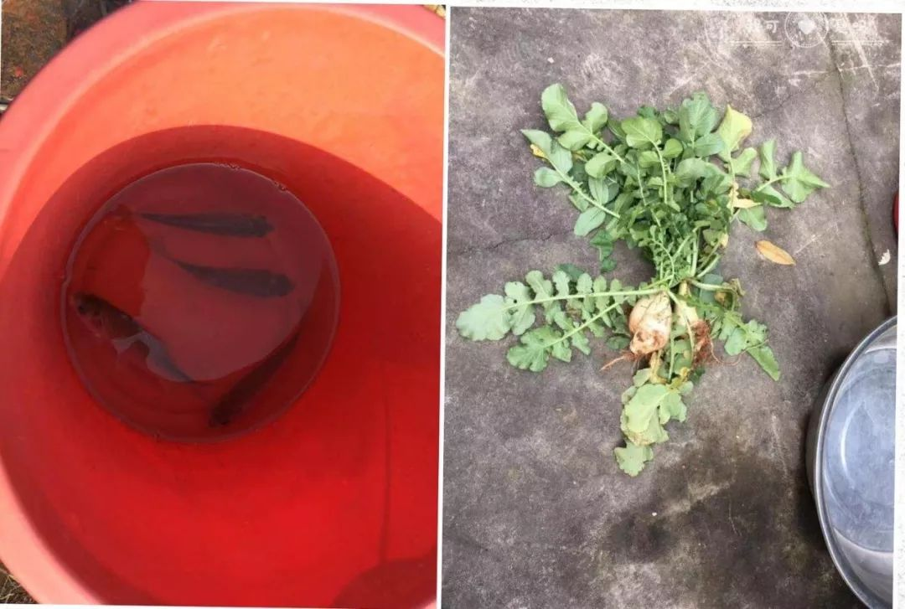
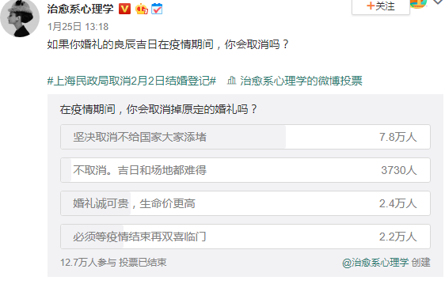

分手时，他带走了我所有的口罩
原文链接 备份链接 这一周，有超过500位读者同我们分享了自己关于爱的故事。今天，我们选取了其中的一些故事，以配合这个名为「情人」的节日——今时今日，这一天似乎看起来不合时宜，但正是因为今时今日，我们才该庆幸，还好，我们还有爱情。 策 …

点击上方物质生活参考加星标！
物质生活参考

作者：彭梁洁
来源：物质生活参考（ID：wzshck）
01.
1月21日，张文和女朋友一起从北京出发，乘高铁到武汉火车站，在此转车，告别——他回咸宁，女朋友回孝感，都与武汉相邻。他们没有想到，孝感会成为这次疫情中感染人数仅此于武汉的湖北城市，也没想过事态发展到这个地步——继武汉之后，两座城市也先后封闭。
张文和女朋友是同事，单位初十上班，两人原本的安排是初八一起回京，还是在武汉火车站汇合乘高铁。他们约好回北京一起看女朋友期盼已久的《唐人街探案3》，女朋友之前反复交代张文，过年在家可以看别的电影，但这部电影一定要留着回北京跟她一起看。
谁都没想到，电影撤档，北京也回不去了。
张文说，不介意把自己当成一个反面典型来写，无论是在亲密关系中还是这次对待肺炎的态度上，他都做得不好。
票是早就订好的。就在回家前一天，关于肺炎的消息已经发酵，当时他们讨论过要不要退票留在北京过年。女朋友的态度是不回了，她向孝感老家一个很有见解的亲戚打听过，对方告诉她形势不妙；张文的态度是回，他也问了在武汉工作的大学同学，得到的反馈是情况没那么严重，“我们都不戴口罩”。两人产生了争执，反复协商决定：回。
至今，张文和女朋友已经分开20多天。两人自觉在家隔离，除了每天固定时间段联系，他会向女朋友汇报自己的一举一动，关注彼此城市的疫情消息，偶尔联机一起打台球。他明显感觉到，“最近一段时间比刚回家那几天联系更频繁些”。
相比思念，他的情绪中自责占了上风，“想挽回过错但力不从心”。2月3日，原定复工那天，女朋友意识到解禁遥遥无期，工作上还有很多事要处理，跟他大吵一架。张文自己也懊悔，“现在全部的后果都是我造成的”，他说解禁之后见面最想做的就是郑重跟女朋友道歉，尽管他已经在微信和电话里道歉无数次了。
他反复回忆的还有另一个场景：高铁快到武汉的时候女朋友换了一个新口罩，提醒赵文也换一个，口罩戴时间太长不好。张文的口罩放在头顶行李架的行李箱里，他嫌麻烦不想拿，女朋友说他“不知死活”，气得不理他。他后来还是认怂了，乖乖拿出来戴上。
反思终于在自我隔离的这段时间启动了。“我大概就是那种迷之自信的人？固执己见，不仅是这一次，以前吵架也常常因为这个。她跟我讲了，我还是按照自己的想法来，总觉得自己是对的，事后打脸，但下一次还是这样。”
经过这件事，张文结婚的愿望变得强烈。他和女朋友认识四年，两人原本打算一年多前女朋友研究生毕业就结婚，但拖到现在，是因为“在一些关键问题上，我知道自己的问题但一直抵触改变，让她没有信心吧。”
至少在这一刻，他的决心毋庸置疑，“回北京之后，认真解决我自己的问题，见家长，结婚。”
相比张文和女朋友分隔两地，陈晶被困在了男朋友村里。大年初二她跟男友回老家过年，那是湖南长沙下面的一个村庄。他们原计划初四就走，结果因为封路一住就是14天。
两人都在长沙工作，住得远，工作单位也离得远，加上最近各自忙于准备考试，一两个星期才见一次面。这次封村，他们第一次连续这么多天、24小时“在对方眼皮底下生活”。陈晶没想到“情商低不会哄人”“平时微信聊天说不出几句话”的男朋友这么照顾自己，她什么活儿都不用干，有几天出太阳，男朋友把家里的沙发搬出来，让陈晶在院子里晒太阳看书。
男朋友开玩笑说这像电影《盲山》的感觉，把她骗到村里，逃出不来了；陈晶则想起张爱玲《倾城之恋》的情节，范柳原和白流苏在战争的炮火轰鸣中终于放下戒备，交付真心，但又觉得这么想太过悲观。
因为没打算在老家待多久，所以一开始家里也没准备太多食物，蔬菜倒是可以去邻居家地里随便摘，但肉到后来不够吃了，封路了也没有地方买。陈晶有天突然想吃肉，男朋友于是提议去钓鱼，晚上炖鱼汤。
家里的鱼竿有点旧了，中间一段用胶带粘起来才勉强能用，浮漂在水里也总是出问题。陈晶并不抱什么希望，连装鱼的水桶都没带，只当这是一个娱乐节目，打发打发时间。哪知道真的有鱼上钩，她兴奋地跑回去拿桶，男朋友妈妈说，这类小鲫鱼，钓够8条才能做一顿。最后一数，两个多小时，一共钓到12条。

那天晚上，陈晶喝到了鱼汤。男朋友的妈妈用12条小鱼炖了一锅萝卜鲫鱼汤，萝卜是在邻居家菜地里拔的，“还带着泥土香的白萝卜，很美味”。
在此之前，陈晶和男友讨论过结婚的问题，他们打算攒够买车的首付就登记。男朋友看上的是丰田那款凯美瑞，20多万，两人各出6万，也算是各自努力工作的动力。
“情人节他不会突然求婚吧？”我八卦地问了一句。
“谁知道他最近有没有搞鬼。”陈晶笑着回答。
02.
被疫情考验的还有婚姻。
在那个病毒被及时遏制的世界里，2020年2月2日，武汉各区婚姻登记处挤满了循着好兆头而来的情侣们。这一天是春节假期后的第一个周末，法定休息日，但因为“世界对称日”这个特殊的日子，全国各个城市民政系统早在1月份就陆续宣布将在这一天敞开大门，成全爱人们的心意。

但现在，整个城市都安静下来了。
全国各地原定2月2日开放的结婚登记日又纷纷宣布取消。北京市发布了具体数据：2月2日这天，全市共收到5200对新人的结婚登记预约。因特殊情况而开放的结婚登记日，又不得不因“特殊情况”取消，看起来只是保持原状，但一切都变了。
一位来自广东的微博网友晒出了预约被取消的提示消息，“以此纪念原本预约的登记日”。而上一条微博还处于置顶状态，那是一个月前记录的幸福时刻：

2月2日以后的日期，有些城市干脆宣布暂停结婚登记，“恢复时间另行通知”，有些城市则以网上预约的形式限流，避免人群聚集。
不仅是结婚登记，婚礼庆典也无法如期举行，新人们派出去的请柬只能作废。有博主发起投票，坚持不取消的只有极少数。

一位在湖北开新娘工作室的朋友告诉我，春节向来是婚礼小旺季，根据年前预约情况，从大年初六开始就有婚礼，整个2月原本有20多个订单，现在统统推迟了，时间未定。工作室共5名员工，如果接下来几个月都没生意，可能打算网络直播化妆课以增加收入，毕竟还要支付租金和员工工资。
但她判断，疫情结束后会有更多人做出结婚的决定，所以对行业前景并不悲观。
然而，有人看到的是疫情的另一面——不少人断言，这次以家庭为单位的隔离将催生一批离婚大军。在一些情感大V探讨此类话题的文章下，许多留言吐露心酸；知乎上已经有人迫不及待地询问民政局何时恢复办理离婚手续。
而口罩作为当前名副其实的“硬通货”，在婚姻里也成为衡量感情深浅的标尺——手里的口罩自己留几个，分给你家几个，我家几个，都要指向爱与不爱、在不在乎的终极问题。
此前，复旦大学附属华山医院感染科主任张文宏的一个演讲视频在网上走红，有媒体炮制出一个哗众取宠的标题——《病毒猎手张文宏：那一刻我不再相信爱情》，取自演讲中张文宏提到的一个段子：
假如说，一个女孩生病了，有可能会感染她的老公，也有可能会感染她的母亲，但是在我看到的病人当中，感染自己家人的比例是很低的，不高于10%，10%里大多数感染给自己的母亲，却没有感染给自己的老公，所以在那一刹那，我对爱情产生了怀疑。
03.
小说《鼠疫》里有段爱情被一笔带过了。那是奥兰城宣布因鼠患封城之初，规定只进不出，市民还有短暂的进城机会。人们本以为会是热恋中的情侣置生命于不顾，做出这种不明智的举动，没想到是一对老夫妻——在瘟疫前出城的老太太赶回奥兰，选择跟老伴共同对抗未知的恐惧，因为他们意识到彼此远离就无法生活。
就像我们之前写过一对60多岁的武汉夫妇，赵平和冯安。1月初赵平先感染，因为医院床位不足，只能自行居家隔离，丈夫冯安随后也被感染。“一开始我们就比较注意，吃饭的碗分开，两个人说话也保持距离，家里的马桶消毒，一人睡一间房，但两口子在一个屋里住，怎么可能完全隔离呢？现在两个人都感染了，算了，也不避讳了。”赵平说。
两人每天早出晚归去医院排队输液，冯安为了让妻子多睡一会儿，早上五点起床先去排位，赵平八点再过去。
2月初，武汉宣布集中收治没有床位的病人之后，社区才给夫妻俩安排了隔离地点。冯安因为检测结果是阳性，先去了宾馆隔离，赵平此时已经恢复得差不多了，且检测结果呈阴性，自己留在家中。前几天收到社区通知，她也必须隔离，否则就给大门贴上封条，不允许自由出入。赵平心想反正现在也是一个人在家，不如也去隔离吧。
她被安排在同一宾馆5楼，丈夫就在楼上，两人一层之隔，每天通过电话联系，掌握对方的身体状况。这段时间赵平一直自责，“如果不是我传染给他，他就不会得这个病，他身体素质一向很好。”
这段时间人们见证了爱情的种种面貌：把爱人送上抗疫前线的医护人员家属；给妻子留下遗书的媒体人；骑车两小时给男朋友送口罩和酒精的姑娘；被迫待在家里、却重新认识了彼此的夫妻；因为疫情取消了春节相亲安排的单身青年；互相为对方检查防护服是否无损的医生夫妻……
今天是2020年2月14日，原定情人节档上映的数十部电影宣布撤档；“云约会”被提倡，仅一天便造成全国餐饮行业700亿的损失；因交易量不足，上百万枝鲜花被销毁，剩下的也很可能因为物流原因无法准时送达对方手中——
但一位网友说：2020年的情人节是最朴素的一个情人节，脱下仪式感外衣和金钱包装之后的爱情， 我们才认清爱情本身的样子。
（受访者均为化名）
*图片来自视频、网站截图和采访者提供

△长按二维码，添加物质生活君微信，
回复“粉丝”，进入物质生活粉丝群，
获取独家优质生活参考。

\= 推荐阅读=

这本书里，藏着非典的秘密，也藏着新冠肺炎的秘密

超长期相处，被父母“逼疯”的年轻人

胆战心惊，我回到了北京
- END-

原文链接 备份链接 这一周，有超过500位读者同我们分享了自己关于爱的故事。今天，我们选取了其中的一些故事，以配合这个名为「情人」的节日——今时今日，这一天似乎看起来不合时宜，但正是因为今时今日，我们才该庆幸，还好，我们还有爱情。 策 …
原文链接 备份链接 从武汉离开的时候，他迎面看到有好多卡车正在往自己来的地方去，他没有办法去描述那一瞬间的感动。「我们可能都是一样的……那种感觉好像怎么都说不上来。」大概都是再普通不过的普通人，所以才选择了逆行。 文｜****林燕 编 …
原文链接 备份链接 - 疫 情 之 下 - 想起从武汉回来经历的种种，心里有些五味杂陈，我为村干部们的疫情防控工作点赞，为自己无恙感到庆幸，也更加迫切希望疫情早日消散，生活能重新美好起来。 ” 1 1月学期末，忐忐忑忑地考完所有考试，我终 …
原文链接 备份链接 文/麓泉 编辑/大风 从1月23日算起，武汉宣布封城已经大概过去了半个月的时间。 一时间，湖北乃至其中的任何一个城市，都成了闻之色变的词语，与湖北有关的人成了全国各地区无差别“歧视”的对象。 封城后的武汉，图源于微博林 …
原文链接 备份链接 自1月23日至今，武汉封城19天。 爱丽丝（注：爱丽丝是电影《生化危机》中女主角的名字，她用这个化名，是希望武汉人能像电影中的人一样，不惧瘟疫）是武汉市汉口一家单位的职员，在武汉生活了30年。封城之际，她选择和父母、 …